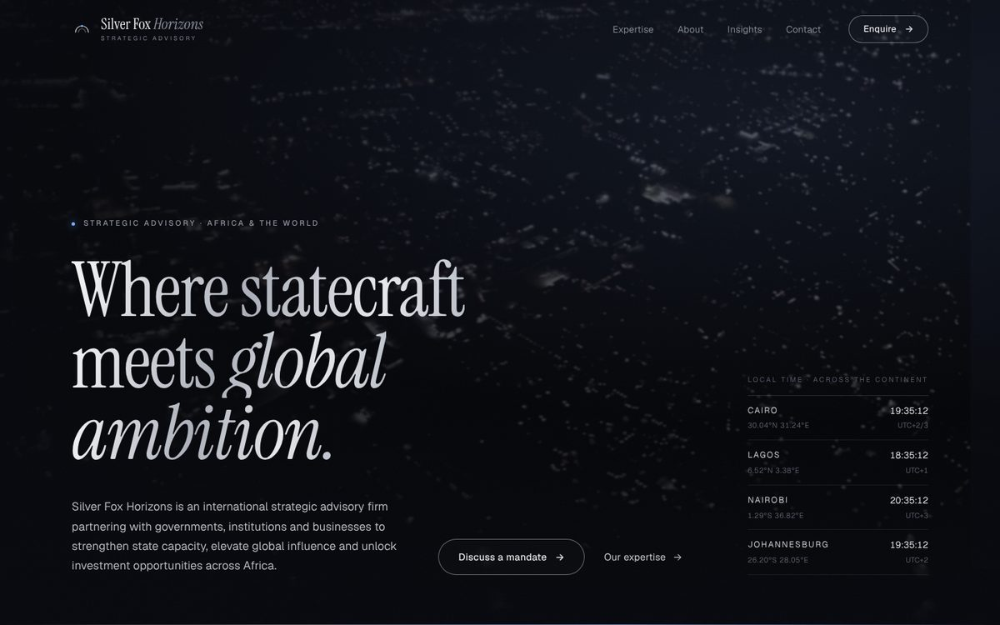

Direction A
Nocturne
Africa seen from above at night, in silver. An interactive map of the continent links African capitals to London, Washington, Brussels, Dubai and Beijing, showing investment diplomacy at a glance. Calm, nocturnal and quietly powerful.
Midnight, platinum and horizon blue
View Nocturne →